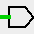
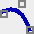
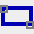
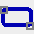
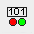

上一节: 资源管理器窗口
工具栏
Logisim-evolution 有几个工具栏。 主工具栏可配置，并提供对最常用工具的快速访问。 这些也始终在导航窗格中可用。

“绘图”模式下的工具栏

“外观”模式下的工具栏
最后，根据资源管理器窗口的状态，还会出现两个栏。 下面介绍它们。


主工具栏
此工具栏有两种演示（见上文），根据编辑模式选择“绘图”或“外观”
“绘图”模式下的工具栏
在“绘图”模式下，可以使用| Project |→| Options |menu tab | Barre d'outils | 配置由下面的工具栏选项卡上的页面呈现。 我们简要介绍一下栏中的默认工具。 还有许多其他组件可以构建电路。 您将在库参考中找到有关所有工具的更多信息

|
Poke tool : Ctrl-1 此工具允许您与模拟组件交互。 例如，如果您push电路连接，它将从一种状态切换到另一种状态，或者如果 push电缆，您可以知道传输信号的值。 有关库 base 中的链接 poke 的更多信息 |
| 选择工具： Ctrl-2 该工具在设计电路时特别有用，它允许询问、移动或选择元件。 它还用于连接电路。 有关链接的更多信息从库base中选择 | |
| 接线工具： Ctrl-3 此工具允许您在图表上放置电缆。 | |
| 文本工具： Ctrl-4 此工具可以在图纸上放置文本并修改组件的标签。 有关库base中的链接文本的更多信息 | |
|  | 引脚工具手册： Ctrl-5 / 6 此工具可以在图表上放置连接引脚。 连接有两种类型：输入或输出。 它们在此页面 Pin 中显示，来自库 Wiring |


|
非、与、或...工具： Ctrl-7 / 8 / 9 / 0 这些工具可以将基本逻辑门放置在 绘图。 逻辑门位于门库中 |

|
工具添加 D FlipFLop： 这些工具可以将 D FlipFLop 放置在绘图上。 D FlipFLop 存在于内存库中 |
| 工具添加注册：这些工具可以将注册放置在绘图上。 寄存器位于内存库中 |
“外观”模式下的工具栏
在这种模式下，我们可以编辑子电路的符号。 工具栏提供绘图工具。 您可以在编辑子电路外观中找到有关使用的更多信息
| 选择工具：选择、移动、复制、粘贴符号。 | |
| 文本工具：插入或编辑文本。 | |
| 直线工具：创建一条线段。 | |
|  | 曲线工具：创建贝塞尔曲线。 第一次单击并拖动指定线条的起点，第二次单击并拖动结束线条并设置曲率。 在线上单击会显示三个控制点。 Shift 并单击中心控制点施加对称曲线。 Alt 单击 中心点可通过控制点（鼠标下方）绘制曲线。 |

|
折线工具 创建一系列连接线，每次单击都会开始一条新线。 双击结束序列。 |
|  | 矩形工具通过从某个角度拖动到对角来创建矩形或正方形 (Shift)。 |
|  | 圆角矩形工具：创建具有圆角边缘 (Maj) 的矩形或正方形，从一个角度拖动到对角。 |
| 椭圆形工具 通过从某个角度拖动到对角来创建椭圆形或圆形 ( Shift )。 | |

|
多边形工具创建多边形，每次单击都会启动一个新面。 双击结束序列。 |
|  | 动态元件 放置动态元件 单击 打开一个窗口，用于选择子电路中的元件。 |
导航面板选项卡工具栏
该工具栏区域根据程序的选项卡显示两个栏。 第一个有四个按钮，当程序处于“绘图”模式时显示。 这些是某些菜单子菜单 | Project | 的快捷方式。

|
添加电路：向我们的项目添加新电路。 |

|
VHDL：向我们的项目添加新的 VHDL 电路。 |

|
在项目层次结构中调出电路。 |

|
降低项目层次结构中的电路。 |

|
编辑模式：从架构模式交替切换到外观编辑模式。 |

|
删除项目层次结构中的电路。 |
当程序处于模拟树视图中时，会显示第二个。 这些是一些菜单子菜单的快捷方式| 模拟 |


|
启用/禁用：Ctrl-E 启用/禁用模拟。 |

|
步进模拟：Ctrl-I 在模拟中向前迈出一步。 |


|
激活/停用刻度：Ctrl-K 启用或禁用时钟操作。 |

|
滴答一次：Ctrl-T 推进一次滴答的时钟。 |

|
勾选一次：F2 推进一个时钟周期的模拟。 |
您可以在模拟菜单中找到更多信息
下一节: 属性表.